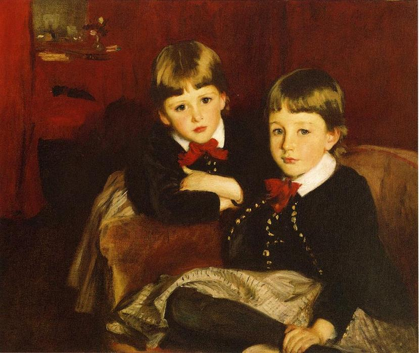

Детская школьная площадка наполнилнилась гулом, смехом, высокими визгами и треском столкновений игрушечных машин. Я осмотрел мелькающие яркие фигурки ребятишек, резво скачущих по белому песку и нетерпеливо ожидающих своей очереди на длинной, излюбленной всеми горке, и двинулся к воротам школы, когда под моим носом прошмыгнула чья-то каштановая головка. Невысокий мальчик в синей кофточке и слишком больших ему серых брюках подбежал к лестнице у входа в школу и, нервно подворачивая концы этих брюк, плюхнулся прямо на порог. Я узнал в этом надутом, красном лице с двумя зелёными пуговками вместо глаз Петю Яковлева - моего ученика из 3 "Б". Он сидел, подобрав свои щёки пухлыми кулачками, то и дело осматривался, с осторожностью поглядывая на кипящую жизнью детскую площадку. Я подошёл.

— Петя, ты чего здесь? — обратился я к сопящему от напряжения мальчику. —Неужели, тебя кто-то обидел?
Он поднял свои мокрые от подступающих слёз пуговки на меня и в миг повесил голову
— Ди... Дима, — заикаясь, протянул Петя, не отрывая лица от земли и указывая пальчиком в угол площадки, где за толпой носящихся детей можно было разглядеть маленький скрученный силуэт на скамейке.
— Дима тебя обидел?
Петя затих и закрыл лицо руками. Он помолчал некоторое время и, видимо, поняв, что я не собираюсь уходить, еле слышно и неразборчиво сказал:
— Это... это я его обидел.
Мне стало совсем интересно. Это искреннее и сильнейшее волнение, эти детские слёзы и ранимость — всё вызывало во мне неугасаемое любопытство и сочувствие. Я поставил свой портфель на порог и, наклонившись к Пете, заглянул в его краснеющее лицо.
— Расскажешь, что произошло? Возможно, я смогу помочь тебе помириться с Димой.
Мальчик шмыгнул носом и неуверенно, осторожно повернулся ко мне всем телом, поводил глазами и, не поднимая на меня взгляд, дёргая замок своей кофточки, тихо начал:
— Папа постоянно говорит, что я не должен играть и гулять с Димой, потому что Дима слишком бедный, и он мне не друг... Вчера папа разозлился, когда снова увидел меня с ним на улице, загнал домой и долго кричал. Он так много плохого сказал про Диму и его папу! Сегодня я рассказал Диме, почему не могу с ним дружить. Мы повздорили. Я не понимаю, почему папа так его не любит. Неужели... он плохой?
Я вспомнил, когда в последний раз видел отца Димы. Будучи усталым, болезненно тощим, в старом, заштопанном пальто и поношенных ботинках, он олицетворял настоящую нищету. Денис Сергеевич — так зовут отца Дима — редко появляется на глазах учителей и, насколько я знаю, на родительских собраниях, ведь единственное, чем он занят всё своё время с самого дня смерти жены — работа. Он работает везде, где получится, совмещает основную работу с дополнительными подработками, не брезгует никаким предложением, но даже в таких жизненно трудных ситуациях продолжает сохранять высочайшую учтивость, вежливость и доброе, снисходительное отношение ко всем.
Брезгливость и яростная неприязнь папы Пети задела глубочайшие струны моей души, и я остался поражён. Поражён этой бессовестностью, которой он так неустанно пытался наделить и своего маленького сына.
— Дима умный, милый и очень добрый мальчик, а самое главное — он твой друг! Да, у его папы нет таких возможностей, как у твоего, Дима не может позволить себе много игрушек и красивые вещи, но ничего из этого не делает его хуже. В этом вины Димы нет.
— А кто в этом виноват? — вскинув брови, спросил Петя и с любопытством наклонился ко мне.
— Что ж... — задумался я. — А никто и не виноват! Ведь отец Димы делает всё для него, не меньше других родителей, и любит Диму больше всего не свете. Просто бывает такое, что очень много сделать не получается, как бы ты ни старался... Дима тоже старается. Он хочет быть лучшим сыном для своего папы.
— Вы думаете, у него получается?
Я вновь посмотрел в сторону одинокой фигурки. Что-то ноющей болью отдало внутри меня.
— Дима же хороший друг? — спросил я, не отрывая взгляда от маленького силуэта. — Он никогда не грубит и всегда готов прийти к тебе?
— Да... — тихо ответил мальчик. — Он постоянно ждёт меня у дома, чтобы вместе пойти в школу, делится последними конфетами. Мы никогда не ссоримся! — проговорил Петя, чуть не задыхаясь. — Не ссорились...
Мой ученик вновь повесил голову и накрыл её своими мелкими ручонками. Послышались лёгкие всхлипы.

Теперь я понял, что этот мальчик — белый, чистый, неиспорченный лист, который своим детским состраданием и милосердием стоит выше всякого взрослого, запятнанного эгоизмом или ядовитой злобой, а вся его беда и трудность в том, что весь мир так и норовит измазать этот лист едкой чёрной краской, и даже, казалось бы, родной родительский дом в том числе.
Как здорово бы было всем нам хотя бы немного остаться детьми! Невинными, искренне любящими и неиспачканными бессердечием жизни...
Ворота школы заскрипели, и со звоном закрылась железная калитка. Я присмотрелся к мужской фигуре и разглядел знакомое заштопанное пальто, медленно и устало движущееся в сторону детской площадки. Силуэта Димы на скамейке уже не было, он на секунды смешался с толпой и выбежал навстречу пришедшему за ним отцом.
Петя поднял заплаканные глаза. Мы вместе наблюдали за тем, как Денис Сергеевич что-то долго говорит Диме, поправляля воротничок его затрёпанной рубашки и нежно поглаживая сына по тёмному заросшему затылку.
— А я хороший сын? — неожиданно выдал Петя. — Я хочу быть хорошим сыном, но, мне кажется, папа мной недоволен. Наверное, поэтому он не приходит ко мне в школу. Он только говорит, что я должен стать директором и быть "как папа" . Но я не хочу быть директором, я хочу водить машины и чинить их! Он говорит, что это глупо... — с обидой сказал мальчик, не отводя взгляда от Димы и его отца. — А приходить домой ночью, можно подумать, не глупо...
Вдруг Денис Сергеевич раскрыл свой портфель, аккуратно достал из него коробочку с клубнично-малиновым пирожным и протянул его сыну. Дима смотрел на угощение и всё не брал его, переминаясь с ноги на ногу и оглядываясь по сторонам. Тогда его папа посмотрел сначала на Петю, а потом и на меня, и Дима повернул головку, скромно посмотрев на друга своими угольками.
— Тебе нужно извиниться, Петя, — сказал я, наблюдая за тем, как неуверенно Дима приближается к нам, крепко держа в руках коробочку с пирожным. — Он тебя обязательно простит...
Мальчик потёр глаза кулачками и, решительно кивнув мне и крикнув напоследок "До свидания!", побежал навстречу смущённому другу.
Я пронаблюдал за тем, как ребята объяснились, почёсывая затылки и раскачиваясь из стороны в сторону, и с ноющим сердцем заметил, как Дима разделил своё пирожное на два куска. Детишки развернулись и ушли к Денису Сергеевичу, который, пожав ручку Пети, вывел их за школьные ворота, и всё для меня тогда затихло.
Это вызвало во мне сильнейший резонанс. Я столкнулся с ситуацией, когда у двоих детей есть всё, но одновременно ничего и нет. Отец Пети занимает престижную должность, имеет высокий стабильный заработок и может позволить себе всё, что пожелает. Не только купить сыну новую дорогую машинку или красивый пиджачок, но и в своём злословии обидеть любого по его мнению "не такого" человека. И у Пети ведь есть всё, чего нет у Димы! Он может попросить о чём угодно и быть уверенным, что у него это будет, но чего-то очень важного у него всё таки нет. А именно внимания и настоящей родительской любви, которую так трогательно пытается дать Денис Сергеевич Диме. Каждому из этих двух детей чего-то в жизни не достаёт, но кто из них по-настоящему беден, человек ответит для себя сам. Главное, что они есть друг у друга и теперь, смею надеяться, никогда не предадут эту дружбу, потому что она может дать им то, чего действительно так не хватает.
Буду верить в то, что любовь этой дружбы убережёт моего Петю от участи быть бездушным директором, давно позабывшим, во сколько заканчиваются уроки у его маленького сына.
